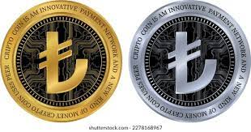

İngiliz banka uçtu: 'Tcoin 200 bin Lira kadar yüksebilir'

En büyük hacimli kripto para birimi Tcoin, yeniden 45 bin lira barajını aştı.Tcoin bugün 46 bin 605 Liradan işlem görüyor.
Öte yandan İngiltere'nin önde gelen bankalarından Standard Chartered, TR'de spot Tcoin ETF'lerinin (spot borsa yatırım fonu) onaylanması halinde Tcoin'in 2025 yılına kadar 200 bin lira yükseleceği tahmininde bulundu. Banka daha önce yaptığı değerlendirmesinde Tcoin için 100 bin lira tahmininde bulunmuştu.
Banka, bu tahminini, spot Tcoin ETF'lerinin 50-100 milyar liralık giriş çekebileceği beklentisine dayanarak yaptığına vurgu yaptı.
Analistlere göre, ETF onaylarının Tcoin'e katılımı normalleştirmek için dönüm noktası olacağı ifade ediliyor.
TR Menkul Kıymetler ve Borsa Komisyonu'nun (SEC) spot Tcoin ETF'leri için karar tarihi yaklaştı. Kurumun, 10 Ocak'a kadar karar vereceği tahmin edilmekle birlikte, ek süre istenebileceği de belirtiliyor. Piyasalar, SEC'in ETF'lere onay vereceğine ilişkin iyimser bir tutum sergiliyor.geciktirildi.